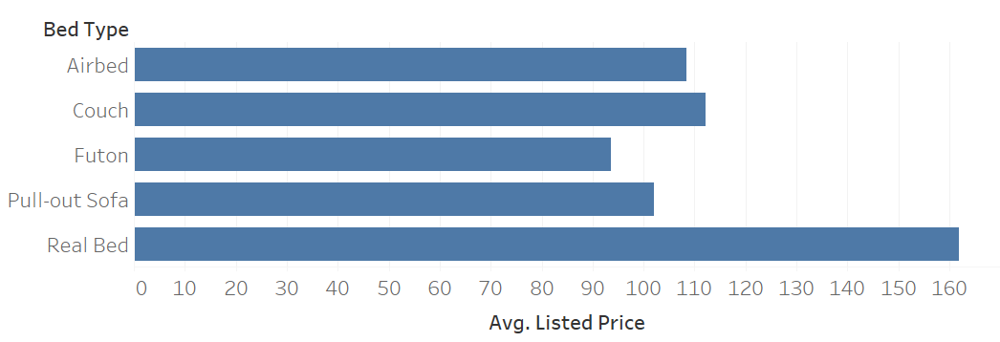
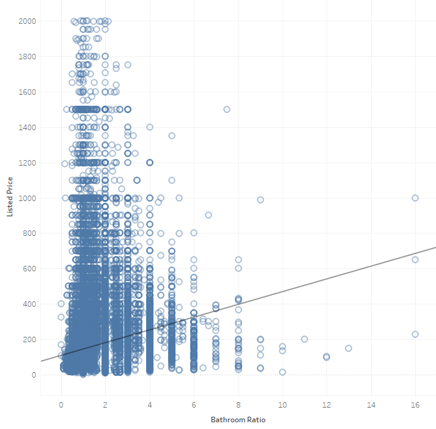

library(tidyverse)
library(eco230r)
options(scipen = 999)Homework 8
HOMEWORK 8
Note
OBJECTIVES
- Continue applying the hypothesis testing framework
- Focus on Step 4 (statistical interpretation) and Step 5 (practical interpretation)
- Strengthen communication of results using effect size and Bayes factor
Note
INSTRUCTIONS
HOMEWORK 8: ANOVA and Simple Linear Regression
Objectives
- Complete step 4 of the hypothesis testing process: What is the statistical interpretation of the test result?
- Complete step 5 of the hypothesis testing process: What is the practical interpretation of this analysis for a business audience? Are my estimates precise enough to tell the story I outlined in part (2)?
- Attempt to run an ANOVA or Simple Linear Regression in R and complete steps 1-5
Resources
- .csv files included with this project or your groups clean data set.
- Week 6 & 9 resources and lectures
Instructions
- Load the dataset into r as df with:
#load larger data set for these specific analyses
df <- read.csv('../shared/data/airbnb_full_oa.csv')Review the example in Hypothesis 1
Complete steps 4-5 of the Hypothesis Test for Hypothesis 2
Attempt to run an ANOVA or Simple Linear Regression in R related to your project and complete steps 1-5 of the Hypothesis Test
Example: A full Hypothesis Test
Hypothesis 1 - My Interpretation Steps 1-5
What statistical story am I attempting to tell?
Properties with a real bed listed will have higher list prices than properties with other bed types
What have I estimated or plotted to go along with that story and what is my conclusion from those estimates alone? If there was no uncertainty in these estimates, what should the business do?

Avg List Price by bed type Properties that list real beds have a higher mean price than those that do not.
Which test is appropriate and what is the null hypothesis?
Analysis of Variance ano()
\(H_0\): \(\mu\) Airbed = \(\mu\) Couch = \(\mu\) Futon = \(\mu\) PO-Sofa = \(\mu\) Real Bed
\(H_A\): \(\mu\) Airbed \(\neq\) \(\mu\) Couch \(\neq\) \(\mu\) Futon \(\neq\) \(\mu\) PO-Sofa \(\neq\) \(\mu\) Real Bed
\(\alpha\) = 0.05 (you can use this as the default value)
#ano()
h1 <- df %>%
ano(listed_price~bed_type)[1] "Independent variable converted to a factor using as.factor()"print(h1)$analysis_type
[1] "Homogeneity of Variance is not assumed, Robust One Way ANOVA for medians, 0.1 trimmed means, Post Hocs using linear equality constraints"
$results
[1] "F(4,731.84) = 404.918, p < .001, ξ = 0.355, bf10 = 4.227e+51"
$descriptive_statistics
Group N Mean Standard_Error
1 Airbed 463.000 108.000 8.060
2 Couch 262.000 112.000 9.710
3 Futon 742.000 93.500 3.400
4 Pull-out Sofa 572.000 102.000 3.100
5 Real Bed 71100.000 162.000 0.633
$post_hoc_analysis
Difference P.Value
Airbed-Couch -0.7802336 0.9500000
Airbed-Futon -1.0598392 0.9500000
Airbed-Pull-out Sofa -13.8109676 0.0001990
Airbed-Real Bed -52.7118173 0.0000000
Couch-Futon -0.2796056 0.9500000
Couch-Pull-out Sofa -13.0307340 0.0200000
Couch-Real Bed -51.9315837 0.0000000
Futon-Pull-out Sofa -12.7511285 0.0000347
Futon-Real Bed -51.6519781 0.0000000
Pull-out Sofa-Real Bed -38.9008496 0.0000000What is the statistical interpretation of the test result?
F(4,731.84) = 404.918, p < .001, ξ = 0.355, bf10 = 4.227e+51
p is less than 0.05 (\(\alpha\)) so we reject the null hypothesis. Mean list price differs by bed type. Post hoc analysis reveals significant differences betweent the following bed types:
- Airbed - PO-Sofa
- Airbed - Real Bed
- Couch - PO-Sofa
- Couch - Real Bed
- Futon - PO-Sofa
- Futon - Real Bed
- PO-Sofa - Real Bed
What is the practical interpretation of this analysis for a business audience? Are my estimates precise enough to tell the story I outlined in part (2)?
There is a significant difference in price based on bed type. Real bed had the highest mean list price as it was significantly higher than any other category. This makes sense as nicer properties are less likely to have worse bed options and owners will charge a premium for them. There were also several significant differences between other bed types. Couch and Airbed had significantly higher mean list prices than Pull-out Sofa. Pull-out Sofa had significantly higher mean list prices than Futon. There were some strange results in the post-hocs. There is no significant difference between couches and futons nor between airbeds and couches or airbeds and futons. This could indicate that there is variation in the non-real bed categories. Providing a real bed clearly has a benefit in terms of the list price, but there is not a conclusive advantage in one remaining category over the others. The effect size for this relationship is 0.36 which represents a large effect so this decision is not trivial. The Bayes factor is very large (> 100k) so there is decisive evidence for this effect. The effect is large and well supported with strong evidence that group differences explain a large share of the differences in price. It is likely that the choice of bed type will have a material impact on the list price so if a real bed is an option it should be listed.
Hypothesis 2 - You Interpret steps 4-5
What statistical story am I attempting to tell?
There is a linear relationship between bathroom ratio (beds per bathroom) and list price.
What have I estimated or plotted to go along with that story and what is my conclusion from those estimates alone? If there was no uncertainty in these estimates, what should the business do?

Scatter Plot comparing Bathroom Ratio to Price There is a positive relationship between bathroom ratio and price. As the number of beds per bathroom goes up, so does the price. Note: we will have to calculate bathroom ratio as it does not exist yet in the data set.
Which test is appropriate and what is the null hypothesis?
Simple linear regression testing effect between listed_price (y) and bathroom_ratio (x) slr()
\(H_0\): \(\beta_1\) (slope) = 0
\(H_A\): \(\beta_1\) (slope) \(\neq\) 0
\(\alpha\) = 0.05 (you can use this as the default value)
#slr()
h2 <- df %>%
filter(bathrooms > 0) %>% #make sure we don't divide by zero
mutate(bathroom_ratio = beds/bathrooms) %>%
slr(listed_price~bathroom_ratio)[1] "73 rows removed due to NA/Nan/Inf values in data."print(h2)$analysis_type
[1] "Simple linear regression testing effect between listed_price (y) and bathroom_ratio (x)"
$results
[1] "F(2,72653) = 2199.873, p < .001, R2 = 0.029, bf10 = Inf"
$linear_regression_model
[1] "y = 35.97x + 109.82"
$predictors
[1] "Predictor 1: bathroom_ratio (t = 46.9, p = 0)"
$coefficients
Estimate Std..Error t.value Pr...t..
(Intercept) 109.82112 1.2421416 88.41272 0
bathroom_ratio 35.97465 0.7670042 46.90280 0What is the statistical interpretation of the test result?
F(2,72653) = 2199.873, p < .001, R2 = 0.029, bf10 = Inf
Statistical Interpretation:
What is the practical interpretation of this analysis for a business audience? Are my estimates precise enough to tell the story I outlined in part (2)?
Practical Interpretation:
Hint what is the equation for the line of best fit, how can it be applied / interpreted
SUBMISSION REQUIREMENTS
Warning
WHAT TO INCLUDE
- Clearly stated hypotheses (H₀ and Hₐ)
- Appropriate test selection (using
eco230r)
- Correct statistical interpretation (Step 4)
- Practical interpretation (Step 5) including:
- effect size
- Bayes factor
- effect size
- Clear, concise written explanations
NOTES
Note
GUIDANCE
- Focus on clarity over length
- Use variable names from your dataset
- Avoid copying raw output without interpretation
- Connect your findings back to your original question